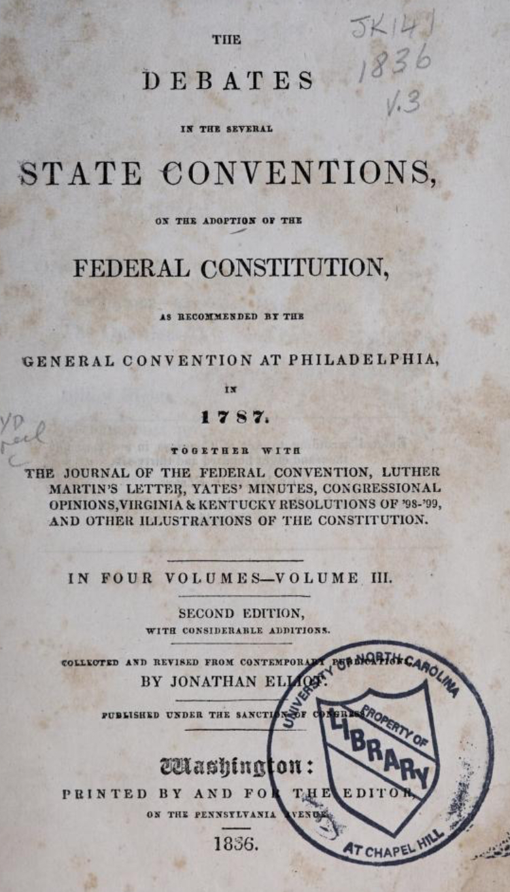

Version 3.4
Version 3.4
Section Header / Context
Unless indeed we could find a society where the government is popular in the fullest sense of the word; a society where all persons of free condition, who are old enough to be naturally capable of acting for themselves — whether they are men or women, poor or rich — have a share in the legislative power, and act by themselves, and not by their representatives.
But whilst we maintain that, to form a civil society and to settle a civil constitution of government, two compacts (or however two distinct acts of consent) are necessary, there is no occasion to maintain that these two acts should be done at different times.
When we speak of that act which produced the constitution of civil government and formed a legislative body as subsequent to the compact which formed the civil society and produced an original legislative power in the collective body, it is not necessary that one of these acts should be subsequent to the other in order of time: for there is no reason in the nature of the thing that should hinder them from being done together.
But still, in the order in which we conceive them, the compact that establishes a legislative body different from the collective body of the whole society must be considered as subsequent to the compact which forms the collective body itself: because we cannot conceive a legislative body different from the collective body to be settled unless we first conceive that such collective body has itself been formed.
Neither is there any reason for maintaining that the compact which settles the form of government and establishes the legislative body must necessarily be an express one. As men may unite themselves to a civil society by tacit agreement, so likewise, when they are so united, they may by tacit agreement settle a form of government.

All Law Notes